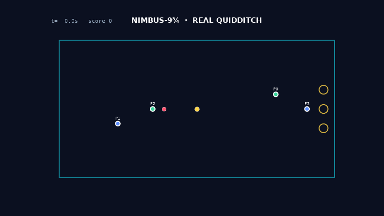
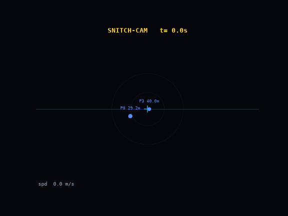

eVTOL brooms you actually fly, and autonomous balls that chase, flee and score — and physically cannot hit a person. The flight & safety software already works in simulation. 32 tests green. Now we build the hardware.

In 2001 Quidditch needed magic. In 2026 it needs a LiDAR, a good Kalman filter, and someone stubborn enough to wire it together. Human sport is stuck in 2D — we left the Z-axis empty. The parts to fill it are finally on the shelf: eVTOL has flown people thousands of times, drone swarms paint olympic skies, and predictive collision-avoidance beats human drone-racers. Nobody combined them into a sport. We did the hard part first — the brain — for the price of electricity.
A full flight-control & safety stack plus a multi-agent match, in code, with a test suite that holds the safety invariants on every tick.
math, control, EKF, safety, balls, full match.
Rust core, 14× tighter than Python — fits the 2500 µs / 400 Hz budget with room.
across a full match — the no-contact floor held every tick.
flying on the onboard 15-state EKF, no ground truth.

Reproduce any of it: python scenarios/match.py seek
“Magic? No — we just wrote the collision-avoidance really well.”
Low-altitude flight, geofenced pitch, ballistic chute, and a kill switch that lands you softly. The vehicle's enemy is gravity, and we planned for it.
Every ball is a padded shell over a micro-drone swarm. A stopping-distance floor means a ball decelerates to a stop at its safety distance from any person — proven across full matches.
The referee deconflicts brooms diving for the same Snitch (0.48 m → 1.6 m apart). Three independent avoidance layers, one unbreakable rule.
The software is the cheap part, and it's done. The next milestone is a single broom that lifts one person, low and over a net, on the exact safety stack you just watched. We're raising a seed round to build it — and the collision-avoidance IP that comes out doubles as the safety layer urban air taxis need.
Name in the credits + the dev log. You were here before it flew.
Early sim access, monthly engineering teardowns, a vote on the first pitch design.
On-site for the first manned hover. You watch a human leave the ground on a broom.
This is a Phase-1 software proof, not a certified aircraft. We are honest about that on purpose — the engineering is the pitch.